Step 1. Download VS Code here ("https://code.visualstudio.com/download")!
Step 2. Sign up for github here ("https://github.com")!
Step 3. Make a new folder on your pc and give it a name that you can later find!
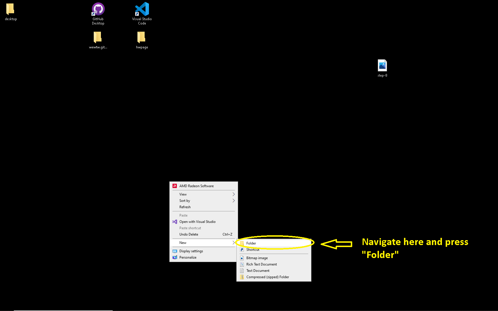Step 4. Open VS Code than open the new folder in VS Code by pressing "File/Open Folder"!
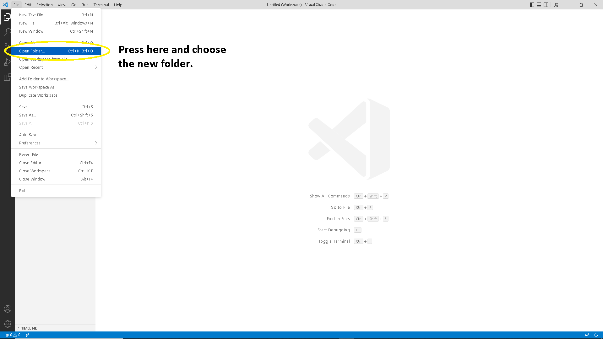Step 4.1. After opening the new folder's name you will see its on the left side of the UI!
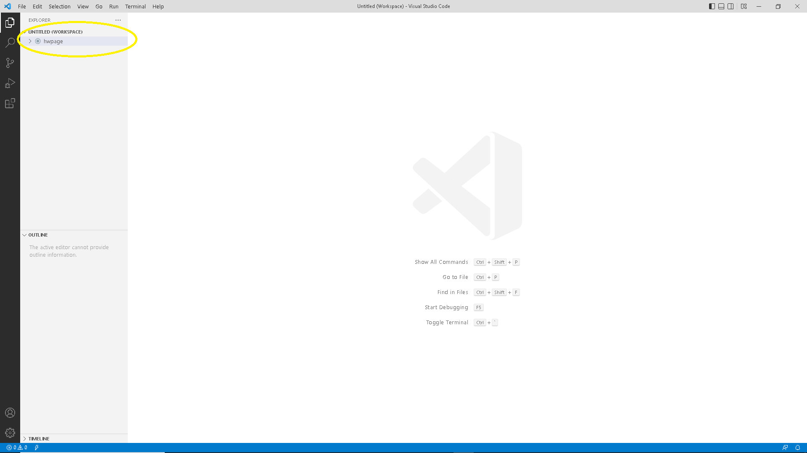Step 5. Press on the new folder name than hoover over the new folder name and you will see a tab named new file.
Press on new file than give the new file a name "index.html" 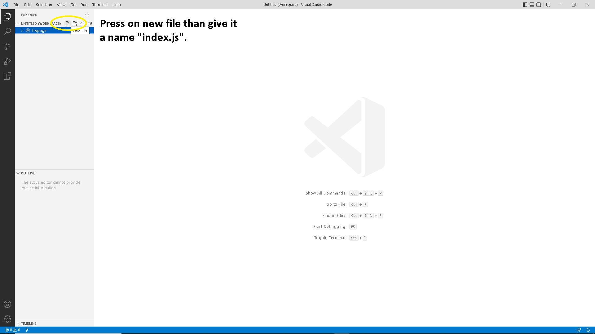
Step 6. Now you should see an index.html file that is open. In this file type in "html" than inside the html element put in "head" and "body" elements! Make sure to save your work by going to "File/Save" to learn more about html go here "https://www.w3schools.com/html/default.asp"
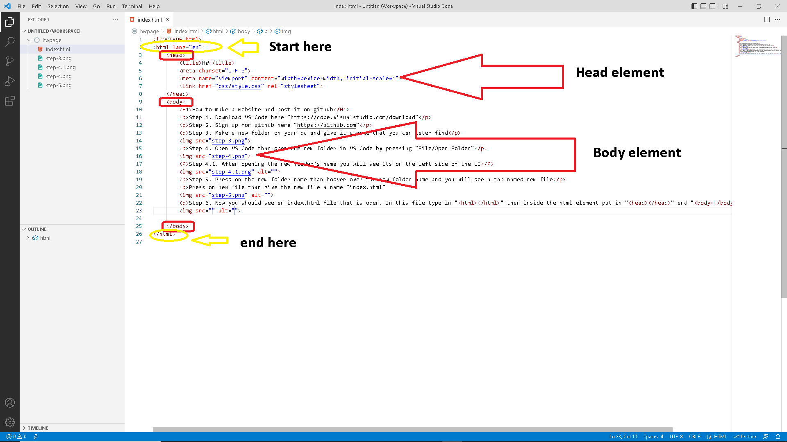Step 7. Insde the body element make a header for the section using "H1" and place the needed text insde! To learn more go here "https://www.w3schools.com/html/html_headings.asp"!
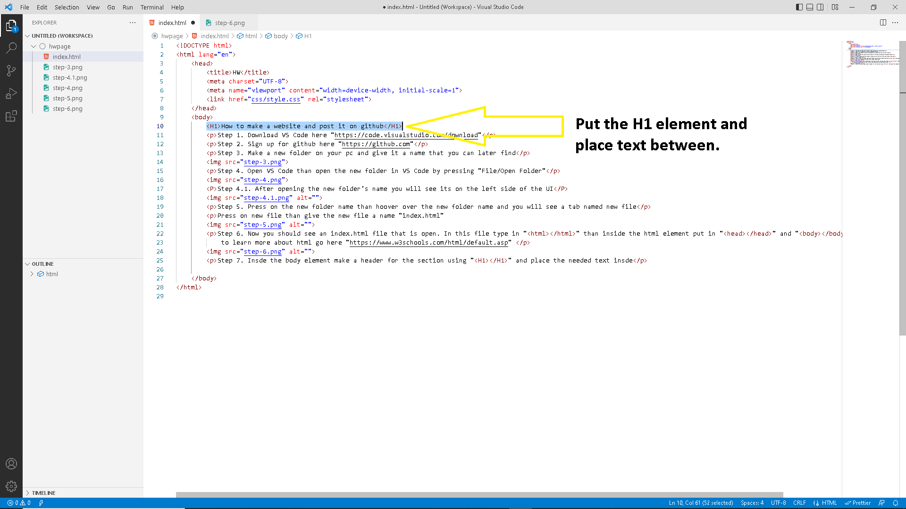Step 8. Add desired text to your website by using the "p" element and placing text inside it! To learn more go here "https://www.w3schools.com/html/html_paragraphs.asp"!
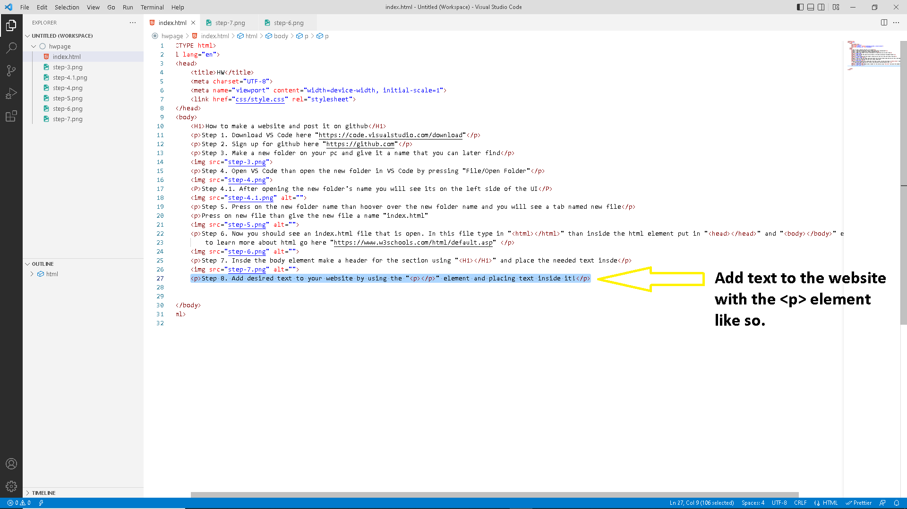Step 9. If you like to add a picture to the website. Use the "img" element, you must first import an img to your project by going to File/OpenFile than finding the photo you like in your folders and selecting it. After this you will see the image alogside the index.html file on the left side of the UI. Than delare the use of an image like so ("img src="myfavpicture.png"). To learn more go here "https://www.w3schools.com/html/html_images.asp"
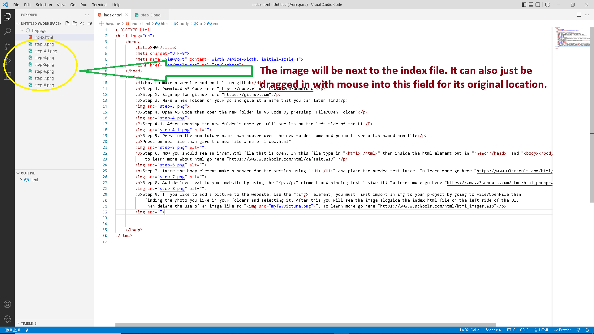Step 10. Open the github webite in your brower and log in if not alrady than navigate to your profile. From here press "Repositories" tag next to "Overview" than press "New"!
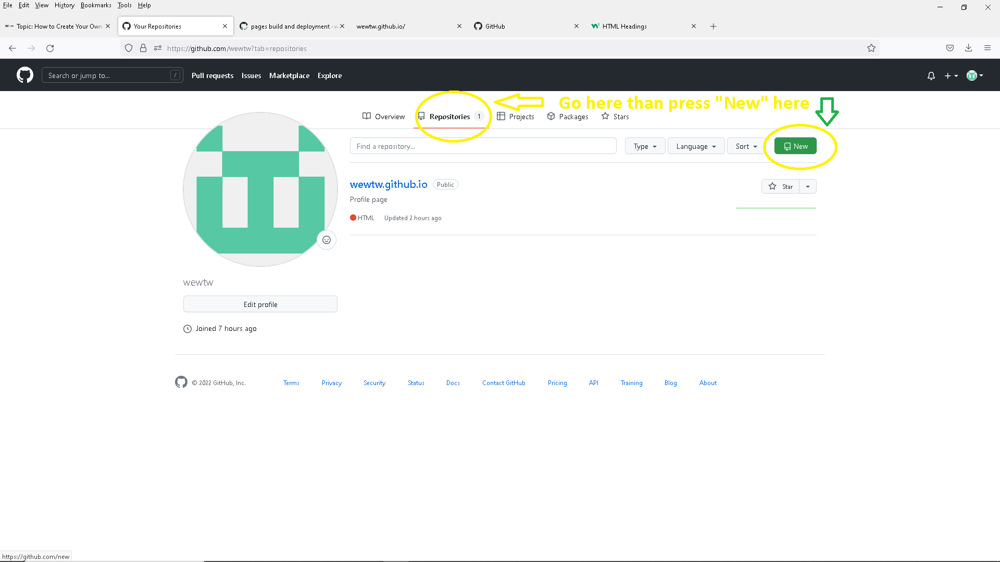Step 11. After pressing new a page will open that will ask for a "Repository name"type in the name you like you give than press "Create repository".
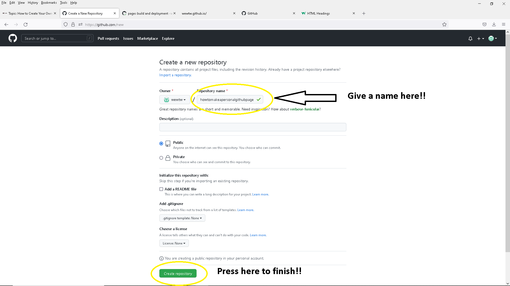Step 12. On the given new page where you can upload the folder with your project
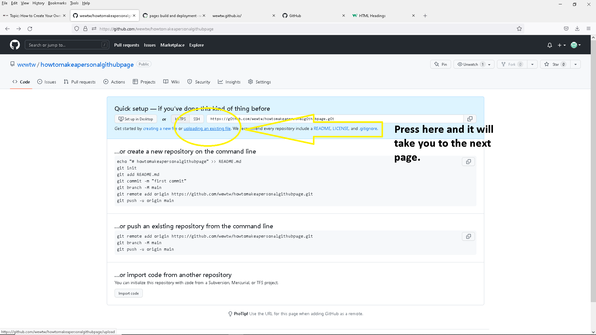Step 13. On this new page you will prompted to dragg in files or choose them. Navigate to the project folder and copy its contnent into the window make sure the index page has no syntax errors. After dropping in your files press "Commit changes"!!
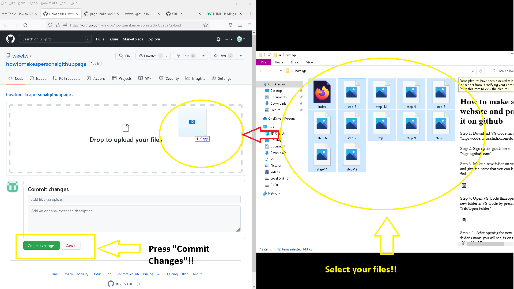After the files are uploaded you can see them on a diffrent page here you can do many things. More impotantly your profile web page with the name you gave it can now be acssesed via the name you gave it with the github.io extention like this "myprofilewebpage.github.io" from a new brower tab!